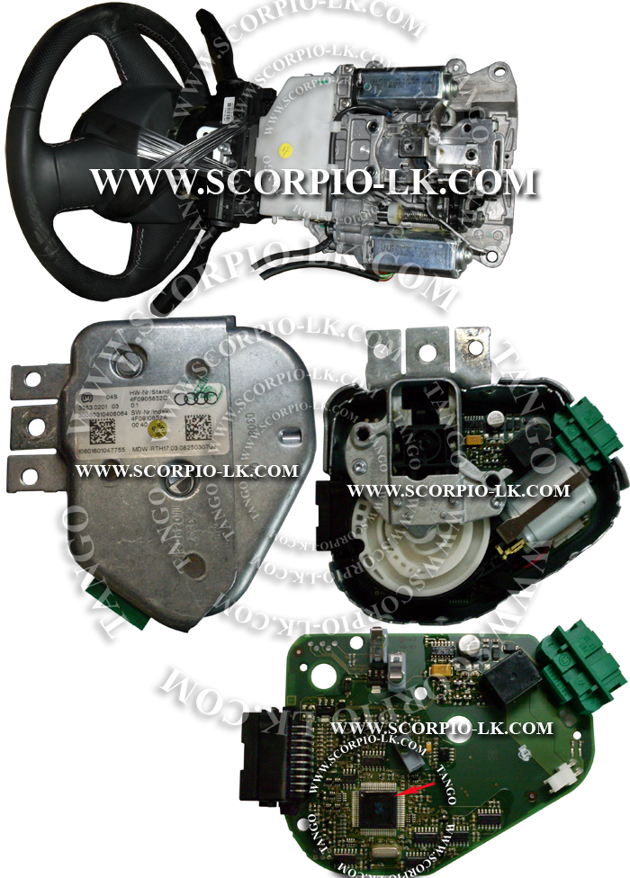
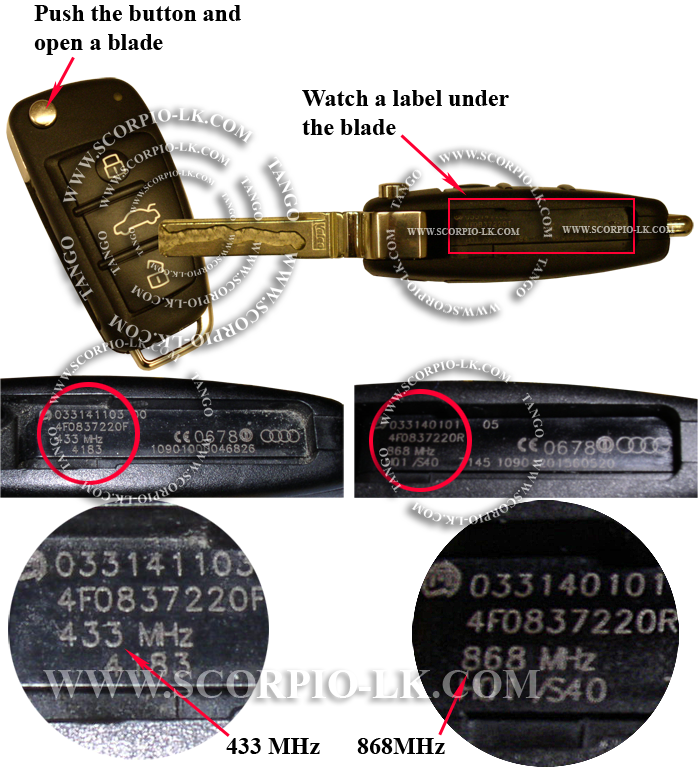
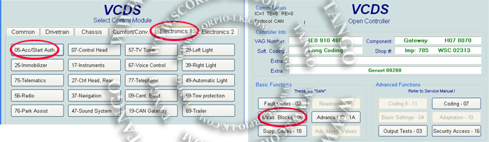
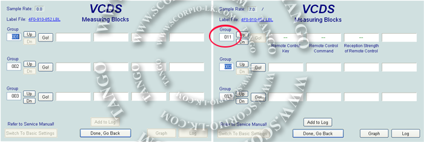
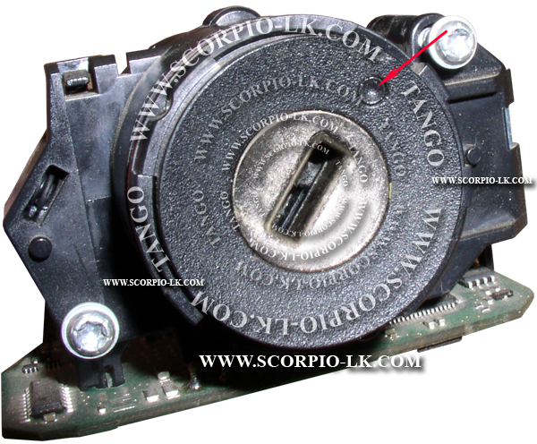
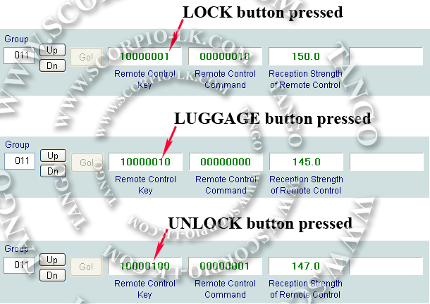

|
EZS |
Top Previous Next |
|
Audi EZS A6, Q7

FAQ EZS Hardware Q: Is the processor secured? A: Yes, EZS always equipped with the secured processor.
Key's Frequency Q: Is there any difference between remote controls of various markets and cars? A: Yes. The main feature is the radio frequency, that may be 315, 433 and 868 MHz.
Q: How can I know, what carrier frequency a key has? A: There are a special compact frequency meters intended for the remote applications. As an alternative method, open the key blade pushing on the button and watch a label under the blade: 
You should pay attention that it is possible the situation that the label is marked for one frequency while the key's electronic operates on the another frequency. It may be happened if somebody had replaced the shell of the key.
Car's Frequency Q: Is there any difference between carrier frequency of cars? A: Yes. Depending on the car equipment, it's frequency may be 315, 433 and 868 MHz.
Q: Must the key's frequency to be the same as the car frequency? A: Yes. Otherwise a car cannot "see" a key due the different carrier frequency.
Q: How can I know, is the key's frequency compatible to the car? A: The simplest way is to test a car against a key using a diagnose software. The next example explains this procedure using VCDS software:
1. Connect to a car via the OBDII and establish connection at the address 05 (Acc/Start Authentication). After the connection established, go to the "Measure Blocks" as shown on the picture: 
Note. To establish connection you need to "wake up" car electronic. Waking up may be reached in several ways. Choose one of the following methods. Break Pedal. When you press the break pedal, the CAN-bus becomes active for about 10 seconds, waking up the car electronic. You have to establish a diagnostic session within this time. Also you can press and release the pedal in cycle, making attempts to connect to the car. Ignition Lock. As soon as a key inserted into the ignition lock, it will push a switch inside of the lock mechanism. This switch produces the permanent activation signal, waking up the car electronic. It is not important which key inserted into the lock: native or false. In some cases you need to turn the ignition lock to ON position. You should avoid multiple insertions with the false key because of each time the false key inserted the system will increment an internal counter of a "thief key" and after 10 attempts it may block the system for an appropriate time to prevent the car abduction.
2. After the "Measure Blocks" feature selected, the new window appears. Enter the "Group 011" and click ENTER as on the picture: 
3. Now you need to pull out the key from the ignition lock, because of the car's receiver does not work if any key presents in the lock. The lock mechanism may keep the key not allowing you to pull it out. In this case you need to unblock the lock pressing on the service button:

4. You are ready to watch the live data of the key. As soon as you press any button on the key, the car receiver will get the signal from the key and you are able to watch this process in the left window of VCDS:

Note. If pressing buttons you cannot see any changes in the leftmost window as it shown on the picture, it means that the car and the key have different carrier frequency.
|